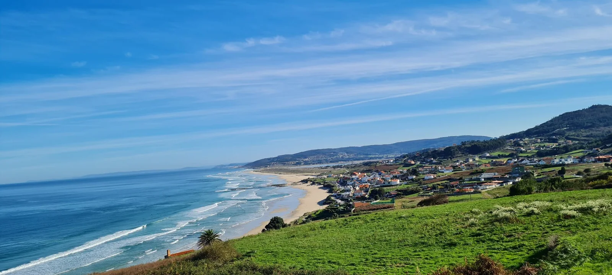

Praia de Razo
Galice, Espagne · surf, bodyboard

Grande plage de la Costa da Morte, exposée à la houle atlantique et entourée de dunes. On y trouve des vagues toute l’année et des écoles installées.
- Lieu
- Galice, Espagne
- Niveau
- Débutant
- Activités
- surf, bodyboard
- Type d'eau
- Mer / océan
- Coordonnées
- 43.29, -8.70 (position approximative du secteur)
Dangers à connaître
- Eau fraîche toute l’année (de 13 à 18 °C en moyenne d’après les normales NOAA) : couvre-toi et sors de l’eau si tu as froid.
- Mer forte par grosse houle : Turespaña indique des vagues fortes. Respecte les drapeaux de la plage.
Le conseil d'Ocean Buddy
Surfe dans la zone prévue pour le surf. Les jours de forte houle, la mer est forte : débutant, attends une journée plus calme. L’eau reste fraîche même en été : prévois une combinaison adaptée.
Ouvrir dans Ocean Buddy Télécharger sur l'App Store
Source : Fiche Ocean Buddy · septembre 2026 · à vérifier localement.